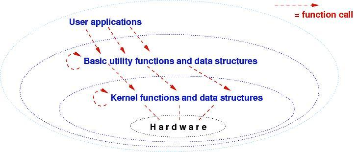

Course Notes — CIS 501: Software Architecture and Design, Fall 2014
We will learn to design and implement component-based programs, where the components are designed and coded in an object-oriented language.
Programs contain data structures and functions that read and update the data structures. A small program declares the data structures and functions all together, in the same file, so that every function can use every data structure and every function. There is not much design and not much structure.
When programs got large (e.g., computer operating systems in the 1960s), they became a mess. (Large programs are built by teams, and it is impossible for multiple people to share and alter one single large program, let alone understand the entire thing!) In the 1970s, the Multics operating system was designed to have levels/”tiers” of functions and data structures:
Each tier of functions use data structures only at their own level and call functions at the same level or only one level lower.
The functions that talk to the computer hardware live at the lowest, kernel-level, and assembly-level functions (open file, read word, allocate storage) and their data structures are grouped together at the “utilities level”. Then, “applications” (user programs) are grouped at the next level.
The Multics software architecture was a huge success because the operating system was written, tested, and understood in layers. It could also be ported to other computer hardware, merely by recoding the functions in the kernel.
All modern operating systems, as well as networking software, are now built in this layered architectural style.
The C programming language is “assembly language with functions, arrays, and structs”. That is, you write systems code (OS kernels, utilities) with it. But some people use C for everything.
This can be bad, because a C program lets all functions share all data structures. This doesn’t work well for large data-base programs, large games, large ANYTHING.
Object-oriented languages let you build programs in pieces (components, assemblies), like cars, electronic gadgets, and buildings are built.
Further, just like cars have blueprints, electronics have schematics, and buildings have floor plans, so do object-based software systems. A system’s blueprint defines its software architecture. We will learn several forms of software blueprints in this course; the forms are often called the Unified Modeling Language (UML).
You can code and assemble a large software system with Notepad and the C# compiler, but it is not so fun. (See David Schmidt’s CIS200 notes to see how.) An IDE (Integrated Development Environment) is an editor, compiler, linker, loader, and debugger, all in one. Most IDEs also load pre-written libraries for graphics, networking, and data structures. Some IDEs “lead you” towards a certain style of software architecture.
What forms of architecture does Visual Studio “lead you to”? It’s time for a lab exercise.
This note was adapted from David Schmidt's CIS 501, Spring 2014, Lecture 1 course note. © Copyright 2014, David Schmidt.